Send photos, videos, files, folders and links between your Mac and Android phones, using the Quick Share button that's already on every Android device. No cable. No cloud. No account.
Free and open source (MIT) · macOS 13 Ventura or later · Apple Silicon & Intel
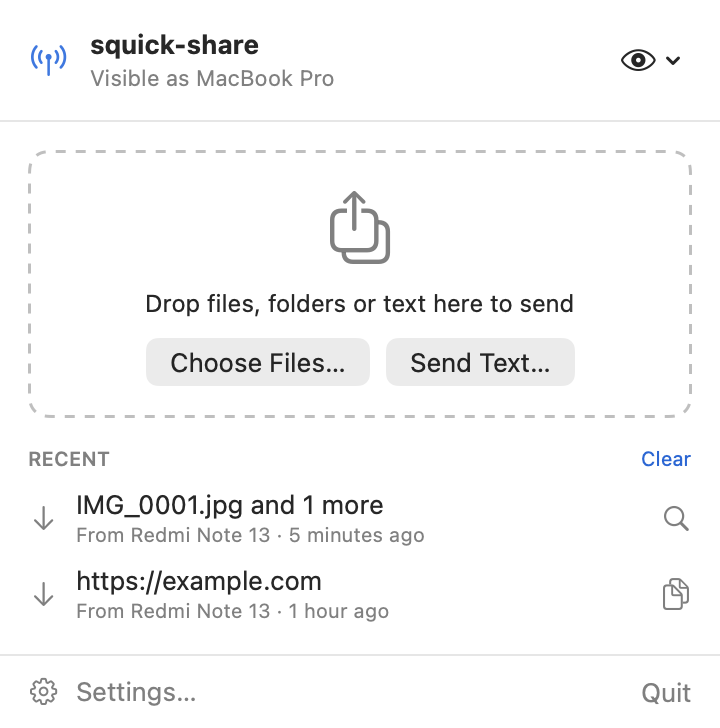
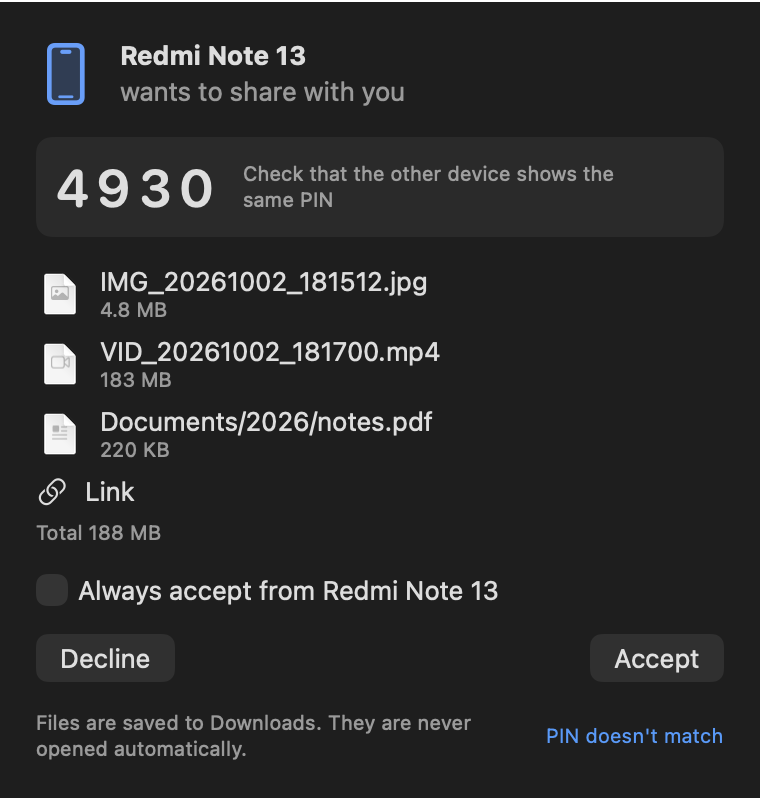
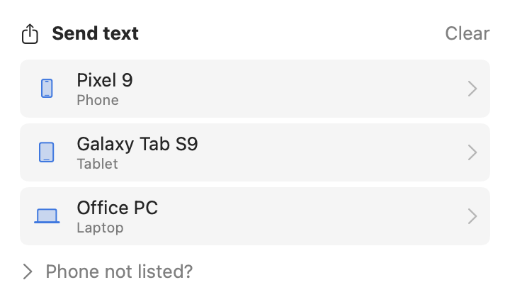
Android has Quick Share. iPhone has AirDrop. The Mac had nothing that talks to Android, until squick-share.
A prompt and a notification show who's sending, what, how big, and a 4-digit PIN to confirm it's really them.
Drag files, folders or text onto the menu bar window, choose files, or right-click in Finder › Share › squick-share.
Files go straight over your local network. A 1 GB video arrives in about 30 seconds on 5 GHz Wi-Fi.
Send whole folders with their structure, or dozens of files at once. Duplicate names never overwrite anything.
Shared links open in a small window with Open Link and Copy. Nothing ever opens automatically.
Speed, time left and cancel for every transfer, plus a progress ring right in the menu bar.
End-to-end encrypted, device to device. No servers, no accounts, no analytics.
Optionally auto-accept from your own phone after you approve it once.
Native Swift and SwiftUI, light and dark mode, VoiceOver labels, launch at login, sandboxed.
squick-share lives in your menu bar. Every screen below is rendered from the real app.
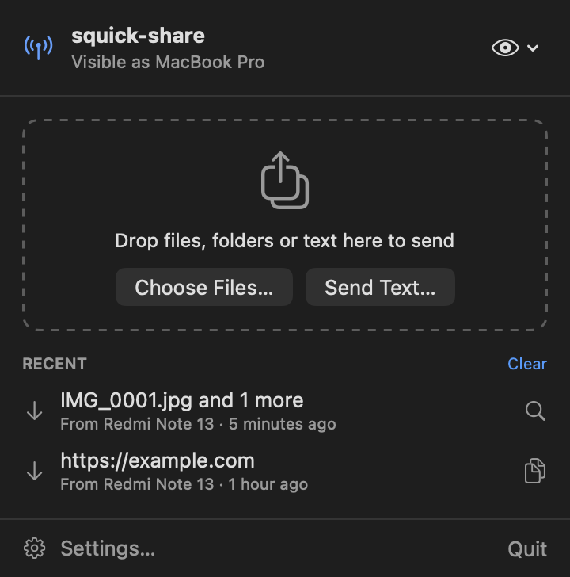
Click the antenna icon in the menu bar to open it.
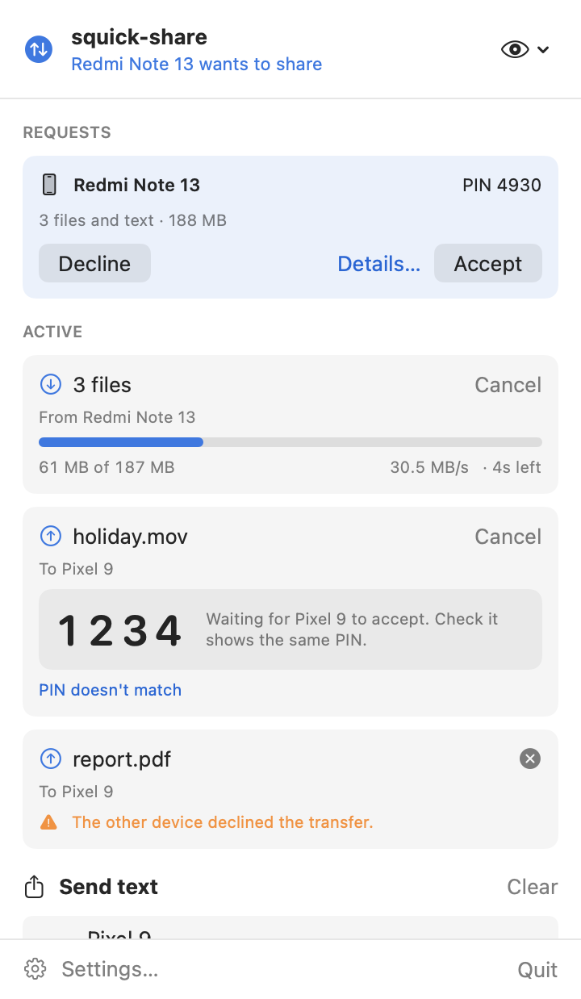
Anything that needs you comes first.
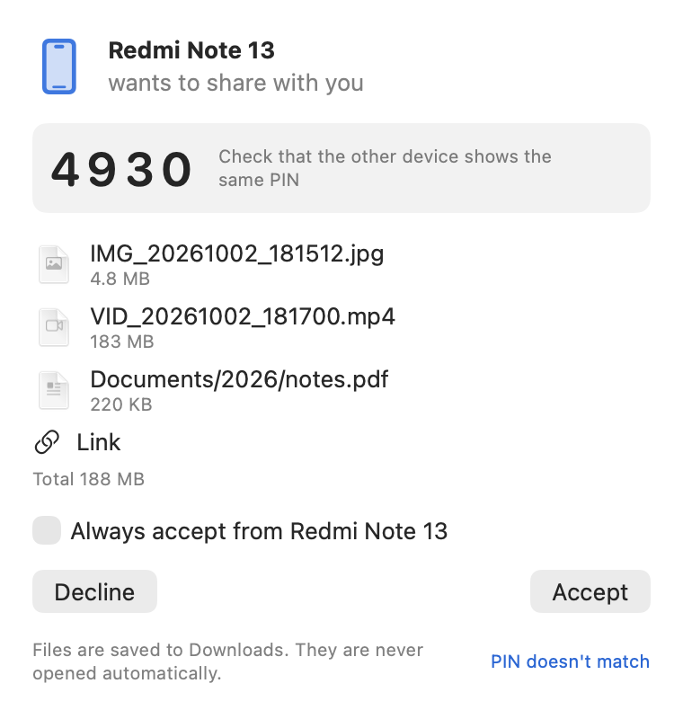
When a phone sends you something, a floating window and a notification appear.
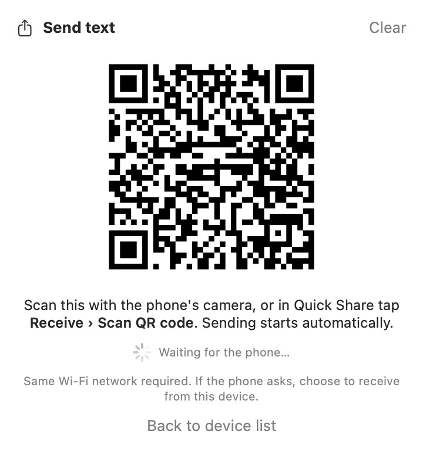
After you drop something, nearby devices appear automatically. Click one to send.
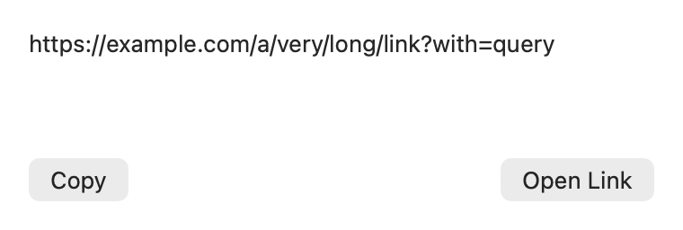
Links and text from your phone open in a small window with Copy, and Open Link for web addresses. Nothing opens by itself.
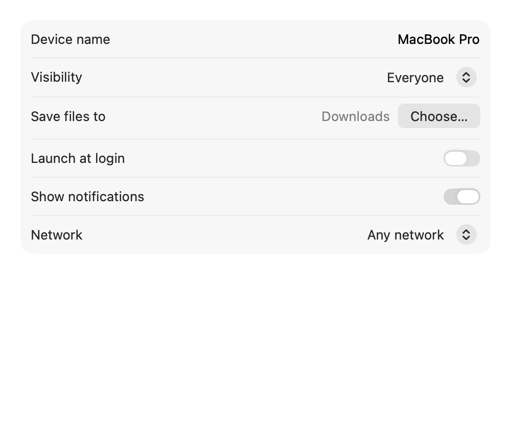
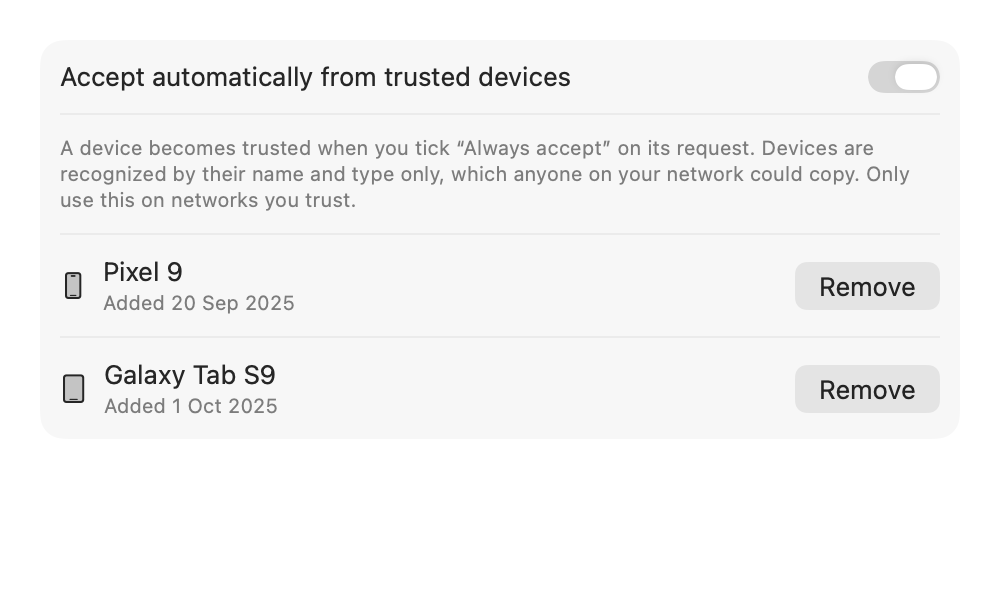
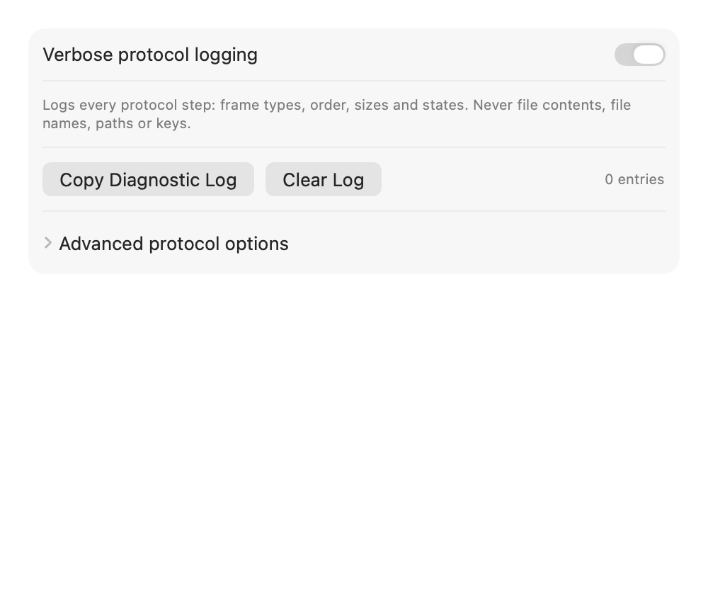
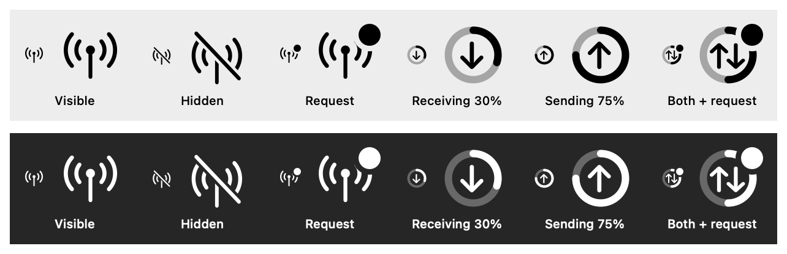
See what's happening without opening anything:
Download one DMG from the latest release.
| File | For |
|---|---|
squick-share-<version>-universal.dmg | Any Mac. Pick this if you're not sure. |
squick-share-<version>-arm64.dmg | Apple Silicon Macs (M1, M2, M3, M4 …). Smaller download. |
squick-share-<version>-x86_64.dmg | Intel Macs. Smaller download. |
Not sure which Mac you have? Apple menu › About This Mac: "Chip: Apple M…" is Apple Silicon, "Processor: … Intel" is Intel. Each release also includes a .zip of the same app.
Double-click the .dmg, then drag squick-share onto the Applications folder in the window that opens.
squick-share is free and ad-hoc signed rather than notarized by Apple, so macOS asks you to confirm it once. Pick one:
xattr -dr com.apple.quarantine /Applications/squick-share.app && open /Applications/squick-share.appOn first launch an antenna icon appears in the menu bar (there's no Dock icon). When macOS asks to find devices on your local network, click Allow. This is required. Allow notifications too, for Accept/Decline alerts.
Both devices just need to be on the same Wi-Fi network.
Tip: on Xiaomi/Redmi phones, use Quick Share (Google's), not "Xiaomi Share". If the phone doesn't see your Mac, choose Announce Again from the eye menu.
squick-share speaks Google's Quick Share protocol over Wi-Fi. Here's a transfer from a phone, step by step.
| Layer | What it does |
|---|---|
| Discovery | Advertises the Mac with Bonjour (mDNS) and finds phones the same way. Re-announces every 20 s so phones that reconnect to Wi-Fi still find it. |
| Handshake | UKEY2: P-256 ECDH with a commitment, producing the session keys and the PIN. |
| Secure channel | AES-256-CBC encryption plus HMAC-SHA256, checked before decrypting, with strict sequence numbers. |
| Transfer | Files stream in 512 KB chunks to a temporary file in your folder, then move into place atomically. Memory stays flat even for huge files. |
| App | SwiftUI menu bar app, notifications, settings, and a Finder/Safari share extension, all on top of a UI-free Swift package called QuickShareCore. |
| Real device | Android phone with Google Quick Share, both directions, PIN verified |
| Speed | ~35 MB/s phone → Mac, ~30 MB/s Mac → phone (5 GHz Wi-Fi) |
| Big files | 1.05 GB video in 30 s; an 11-file, 440 MB batch in 14 s |
| Memory | A 128 MiB transfer adds about 1 MiB of memory |
| Automated tests | 77, including crypto checked against an independent Python implementation, malformed-data fuzzing, and loopback transfers |
No servers, no accounts, no analytics. squick-share only talks to devices on your local network.
Fresh keys for every transfer. The PIN on both screens confirms you're connected to the right device.
Incoming names are sanitized (no ../ tricks, hidden files or spoofed extensions). Files are written only inside your chosen folder and never opened automatically.
Runs in the macOS App Sandbox with the Hardened Runtime. It only gets network access and your chosen folders.
Strict message ordering, size limits, and timeouts at every stage, plus fuzz tests that feed it malformed data.
| Device | Status |
|---|---|
| Android with Google Quick Share | Tested both directions |
| Pixel, Samsung | Expected same protocol, not yet tested |
| Quick Share for Windows, RQuickShare (Linux) | Expected not yet tested |
| QR-code pairing | Not working yet |
Not supported: Wi-Fi Direct and hotspot transfers (not available to normal Mac apps), internet relay, Google-account "Your devices / Contacts" visibility (use Everyone), and Bluetooth. Both devices must be on the same Wi-Fi network.
Android phones only advertise themselves while they're ready to receive. Open Files › Quick Share › Receive (or the Quick Share tile in Quick Settings) and keep that screen open.
squick-share is free and ad-hoc signed rather than notarized through Apple's paid program. Follow step 2 once and it opens normally afterwards.
No. iPhones use AirDrop, which already works with your Mac. squick-share is for Android's Quick Share.
Files are only saved, never opened, and only inside your chosen folder. Check the PIN matches the sender's screen, and decline anything you don't expect.
Open Settings › Diagnostics, turn on verbose logging, try again, click Copy Diagnostic Log, and paste it into an issue on GitHub. The log never contains file contents, file names or keys.
Requires Xcode 16 or later. The protocol lives in a UI-free Swift package, QuickShareCore, with a small public API.
git clone https://github.com/mukesh-devs/squick-share.git && cd squick-share
./scripts/build-release.sh --install # universal build, installed to /Applications
./scripts/build-release.sh --all # universal, arm64 and x86_64 apps + zips
./scripts/make-dmg.sh # squick-share-<version>-<arch>.dmg
cd Packages/QuickShareCore && swift test # 77 tests| Folder | Contents |
|---|---|
SquickShare/ | The SwiftUI menu bar app: views, settings, notifications |
ShareExtension/ | Finder and Safari share menu extension |
Packages/QuickShareCore/ | Protocol, crypto and networking (Swift 6), plus a command-line tool and the test suite |
docs/ | This site, protocol notes, compatibility matrix, and the device testing guide |
scripts/ | Release builds, DMG packaging, screenshots, protobuf generation, crypto test vectors |
.github/workflows/ | Release workflow: tests, builds all variants, publishes DMGs and zips |
Releases: push a tag like v1.0.2 and GitHub Actions publishes squick-share-<version>-{universal,arm64,x86_64}.{dmg,zip}. More in the README.